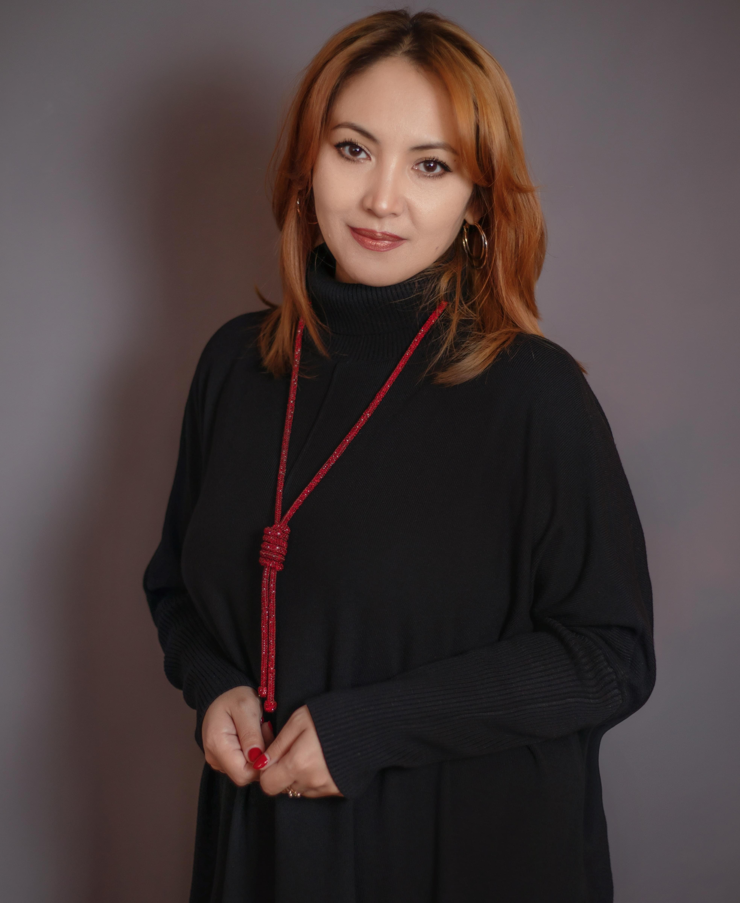
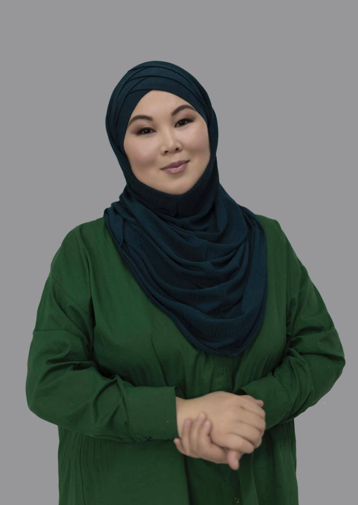
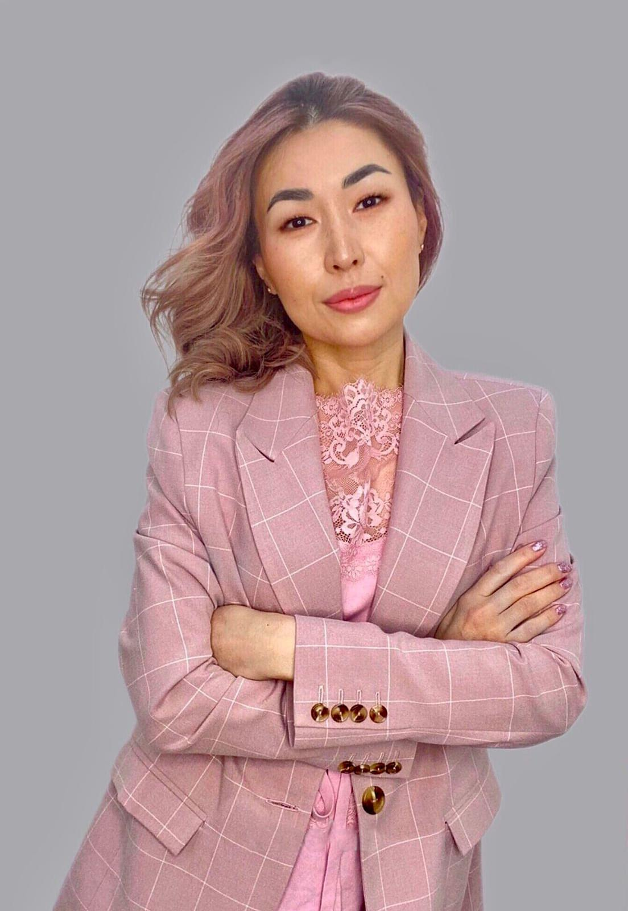
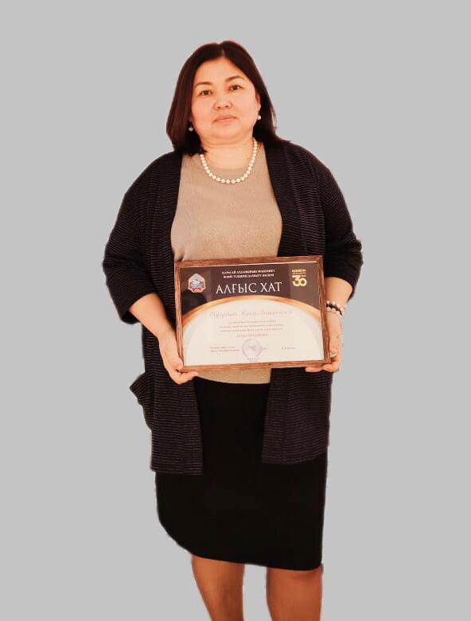
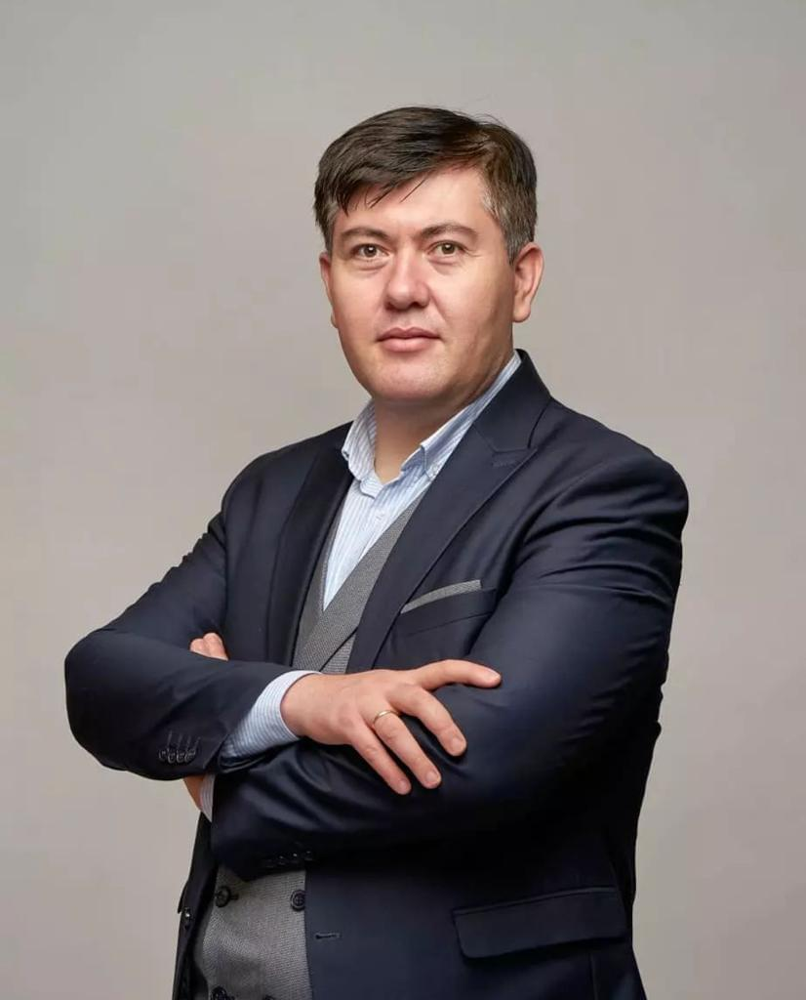
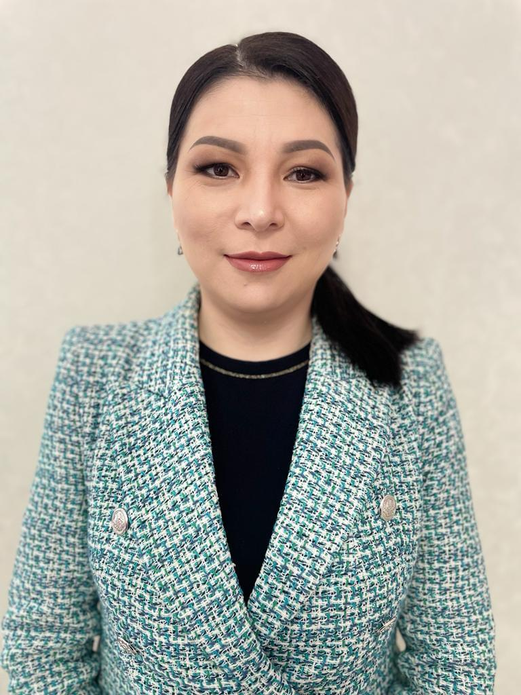
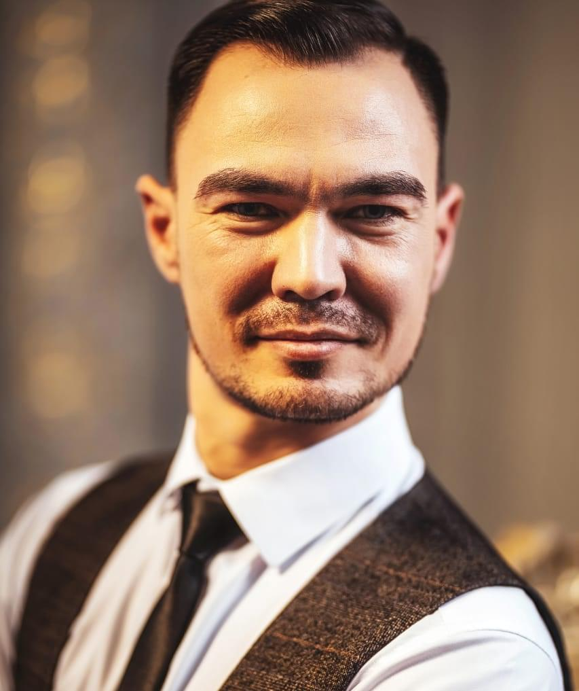
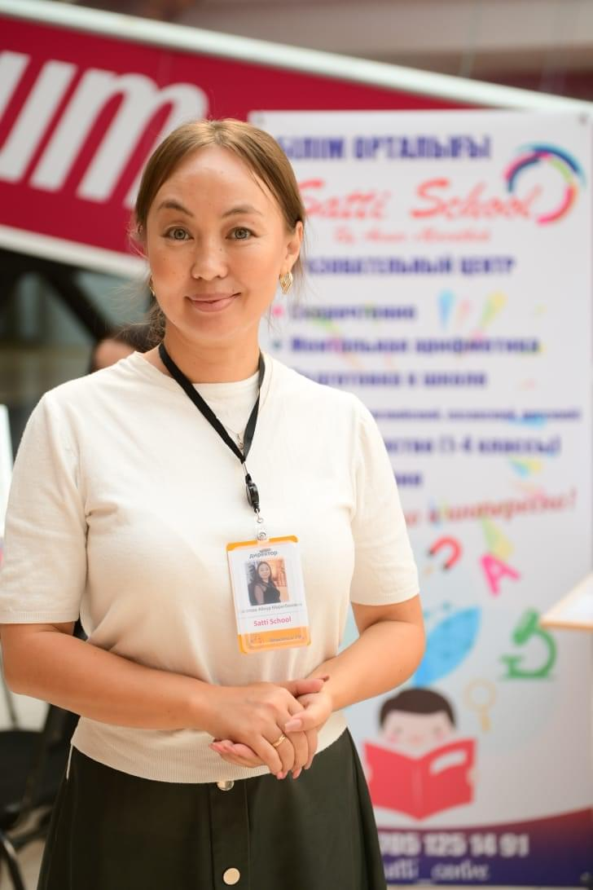
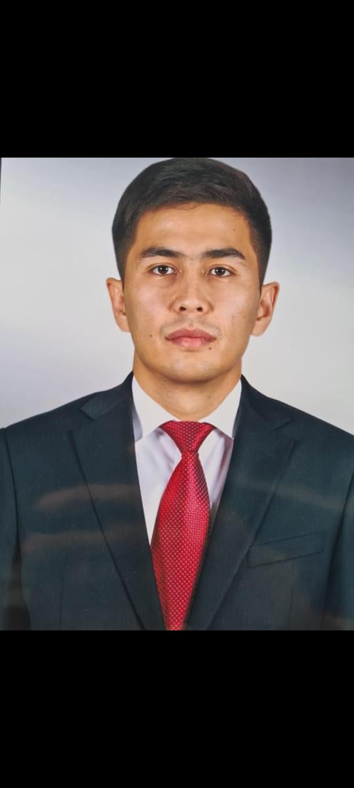
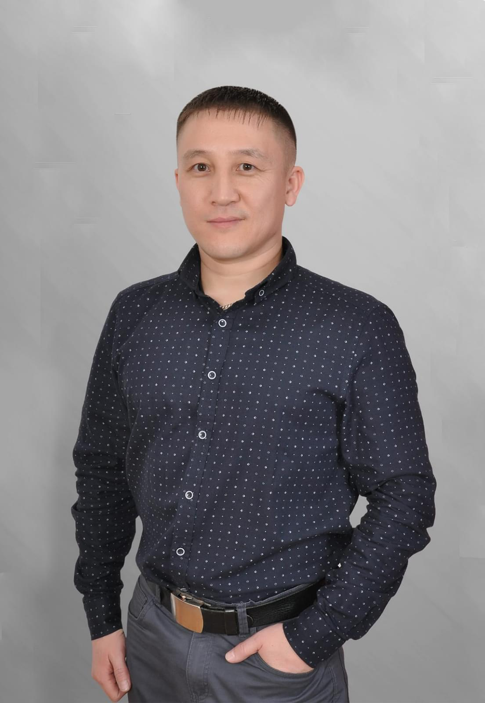

Абдельдинова Айгуль
Дюсембаевна
Учредитель
Педагог с 20-летним стажем
Руководитель образовательно-творческого центра «ALAU» в г.Талдыкорган
Региональный директор ассоциации г.Талдыкорган

Тусибиянова Гульжан
Нурбековна
Учредитель
Педагог-хореограф высшей категории с 18-летним стажем
Президент общественного фонда развития и поддержки детского и юношеского творчества "Art поколение"
Основатель "Art productions"

Исмаилова Алия
Евгеньевна
Учредитель
Магистр в области финансов с 18-летним стажем
Дипломированный специалист по внутреннему аудиту IFA
Налоговый консультант РК
Региональный директор ассоциации г.Нур-Султан

Тургунбаева Жанар
Аманжоловна
Учредитель
Профессиональный бухгалтер РК
ДипИФР Внутренний аудит. Стаж 25 лет
Предприниматель

Тусмагамбетов Жандос Бектаевич
Региональный представитель Кызылординской области
ОФ Центр развития инновационных идей Самурык

Аманжолова Айжан Балтаевна
Региональный представитель Карагандинской области
Координирующий директор школ "Қарақат" по РК
Предприниматель в сфере культуры,
швейного дела и опт-розн.торговли

Файзуллин Раиль Шаукатович
Региональный представитель г.Шымкент
Член АФСТРК
Председатель счетной Коммисии
Основал танцевальную студию "Ритм"

Сагатова Айнур Маратбековна
Региональный представитель Акмолинской области
Директор центра «Satti School» г.Нур-Султан
Абдельдинова Айгуль Дюсембаевна
Региональный представитель Алматинской области
Педагог с 20-летним стажем
Руководитель образовательно-творческого центра «ALAU» в г.Талдыкорган
Региональный директор ассоциации г.Талдыкорган
—
Региональный представитель Туркестанской области
Достижения
Доп. информация

Куатбаев Азамат
Региональный представитель Актюбинской области
Директор СК "Иппон"
Исмаилова Алия Евгеньевна
Региональный представитель г.Нур-Султан
Магистр в области финансов с 18-летним стажем
Дипломированный специалист по внутреннему аудиту IFA
Налоговый консультант РК
Директор ТОО "Kids Art"
—
Региональный представитель Атырауской области
Достижения
Доп. информация
—
Региональный представитель Мангыстауской области
Достижения
Доп. информация
—
Региональный представитель Западно-Казахстанской области
Достижения
Доп. информация
—
Региональный представитель Костанайской области
Достижения
Доп. информация
Тусибиянова Гульжан Нурбековна
Региональный представитель Северо-Казахстанской области
Педагог-хореограф высшей категории с 18-летним стажем
Президент общественного фонда развития и поддержки детского и юношеского творчества "Art поколение"
Основатель "Art productions"
—
Региональный представитель Павлодарской области
Достижения
Доп. информация

Оразбаев Куаныш Есенгельдыевич
Региональный представитель Восточно-Казахстанской области
Руководитель центра развития детей «ДАРЫН» г.Семей
—
Региональный представитель Жамбыльской области
Достижения
Доп. информация